相关资源
-
原文: [2111.05826] Palette: Image-to-Image Diffusion Models (arxiv.org)
-
视频解读: 【读论文】245 Palette: Image-to-Image Diffusion Models_哔哩哔哩_bilibili
-
30 分钟带你把【diffusion model】给脱个“精光”！模型解读+代码复现双重出击，直接带你把扩散模型拿捏的死死地！！！-人工智能/扩散模型_哔哩哔哩_bilibili
ABSTRACT 摘要
这个论文阐述了一个基于条件扩散模型的图像到图像的统一框架,主要有四个用途:
- 黑白照片上色(Colorization)
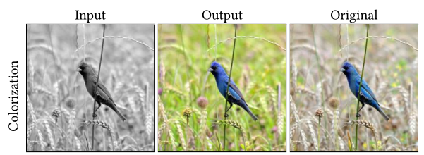
- 图像修复(inpainting)
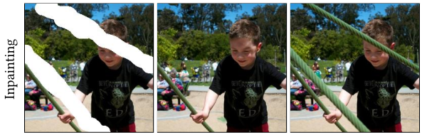
- 缺失图像补全(uncropping)
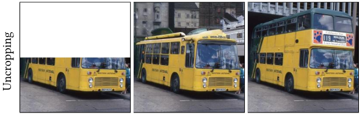
- JPEG 图像修复(JPEG restoration)

我们设计的这个模型优于(outperforms)生成对抗网络(GAN)和基础模型(regression baselines),不需要:
-
特定于任务(regression baselines)的超参数调优(regression baselines)
-
结构(architecture)定制(customization)
-
任何辅助损失(any auxiliary loss)
-
复杂(sophisticated)的新技术
【正则化】—通俗易懂谈正则化：L1 正则化和 L2 正则化_开数据挖掘机的小可爱的博客-CSDN 博客
我们阐述了 正则化与 正则化在去噪扩散目标(denoising diffusion objective)在多种样本(sample diversity)中的影响,
Self-attention 自注意力机制讲解 李宏毅版 v.s 吴恩达版 - 知乎 (zhihu.com)
通过实验研究(empirical studies)证实了自注意力机制(self-attention)在神经网络架构(neural architecture)的重要性.
重要的是, 我们提出了一个基于 ImageNet 的统一评估协议(unified evaluation protocol), 有人工评价(human evaluation)和样本质量分数(sample quality scores)
FID 图像质量评估指标_csm_81 的博客-CSDN 博客
(FID,Inception Score, Classification Accuracy of a pre-trained ResNet-50, and Perceptual Distance against original images)
期待这一评价协议能够在图像间的转换研究(image-to-image translation research)中有用.
最后,我们展示了这个通用模型(generalist,multi-task diffusion model)比特定于某些任务的模型(task-specific specialist counterparts)效果相当甚至更好.
CCS CONCEPTS
ACM 投稿时 CCS CONCEPTS 生成及插入_豆浆人的博客-CSDN 博客_ccs concepts
CCS CONCEPTS 这个东西简单来说可以看作一个论文的分类索引，是 ACM 出版论文时论文中必须要附带的东西，一般来说不需要提前放入，等到论文出版时自然会有编辑通知是否需要插入。
- 计算方法(Computing methodologies)→神经网络(Neural networks)
- 图像处理(Image processing)
- 计算机视觉问题(Computer vision problems)
KEYWORDS 关键词
- 深度学习(Deep learning)
- 生成模型(Generative models)
- 扩散模型(Diffusion models)
1 INTRODUCTION 介绍
-
许多计算机视觉/图像处理问题可以被归结为图像-图像转换问题:
-
图像修复(restoration tasks)
-
超分辨率(super-resolution)
-
图像上色(colorization)
-
像素级的图像理解任务(pixel-level image understanding tasks)
- 实例分割(instance segmentation)
- 深度估计(depth estimation)
-
许多问题很复杂,多个输出图像对应一个输入图像, 一种自然的方法是学习图像的条件分布,使用深度生成模型(deep generative models)可以捕获图像高维空间(high-dimensional space of images)中的多模态分布(multi-modal distributions).
-
GAN 被广泛适用, 然而(Nevertheless)
-
训练 GAN 会有挑战性
-
会在输出中丢失功能(drop modes)
各种生成模型：VAE、GAN、flow、DDPM、autoregressive models_zephyr_wang 的博客-CSDN 博客_生成模型有哪些
normalizing flow - 知乎 (zhihu.com)
下列模型在特定应用取得了成功, 但是还没有取得与 GAN 的质量与通用性水平.
- 自回归模型(Autoregressive Models)
- 变分自编码器(VAEs)
- 自动化流(Normalizing Flows)
-
-
扩散和基于分数的模型(Diffusion and score-based models)最近备受关注:
- 在连续数据建模(modeling continuous data)方面取得了几个关键进展, 在语音合成(speech synthesis)与目前最好(SoTA)的自回归模型(autoregressive models)效果相当.
- 在类条件(class-conditional)的 ImageNet 生成条件中, 在 FID 得分中优于GAN
- 在图像超分辨率中, 在面部增强(face enhancement)效果中效果优异, (delivered impressive … results)优于GAN
尽管如此, 尚不明确该模型能否与 GAN 竞争, 为图像处理提供一个通用的框架.
- 本文研究了 的一般适用性.泛用性好, 不用改变超参数(hyper-parameters)和损失函数(loss), 在四大问题(namely colorization, inpainting, uncropping, and JPEG restoration)中输出效果好(delivers high-fidelity outputs)
-
我们研究 的关键组成部分:
- 去噪损失函数(denoising loss function)
- 神经网络架构(the neural net architecture)
在去噪目标(denoising objective)的损失函数中产生了类似的样本质量分数(similar sample-quality scores), 导致了模型样本中更高程度的多样性,
产生更保守的输出(more conservative outputs) .
我们还发现, 从 的 U-Net 架构中移除自我注意层(self-attention layers)建立的完全卷积模型(fully convolutional model)会损失性能.
我们提出了一个基于 ImageNet 的标准化评估协议, 汇报了几个基线的样本质量评分(sample quality scores for several baselines), 我们希望这个基准将有助于 image-to-image translation 的研究.
2 RELATED WORK 相关工作
-
我们的工作灵感来自于Pix2Pix(对称图像转换（pix2pix，使用对抗损失和重建损失形成输入和输出图像之间的映射。),它基于 GANs 探索无数(myriad)的 image-to-image translation tasks, 基于 GAN 的技术(GAN-based techniques)也被用来解决 image-to-image 问题:
-
未配对转换(unpaired translation)
-
无监督跨域生成(unsupervised crossdomain generation)Unsupervised Cross-Domain Image Generation - 简书 (jianshu.com)

-
多域转换(multi-domain translation)
-
小样本非监督图像转换模型(few shot translation)
然而, 现有的 GAN 模型有时无法对具有一致结构(consistent structural) 和 纹理规律性(consistent structural) 的图像进行整体翻译.
-
- 扩散模型(Diffusion models)在下列方面取得了令人印象深刻的成果:
- 图像生成(image generation)
- 音频合成(audio synthesis)
- 图像超分辨率(image super-resolution)
- 未配对(unpaired) image-to-image translation
我们的条件扩散模型建立在这些最新进展的基础上，显示了一套 image-to-image translation 任务的通用性。
-
-
大多数用于图像修复(inpainting)和其他线性逆问题(linear inverse problems) 都适应了无条件模型(unconditional models)以便在条件任务(conditional tasks)中使用.这样做的好处是只有一个模型需要被训练.
-
然而无条件任务(unconditional tasks)通常比有条件任务(conditional tasks)更难.
-
我们将 转换为一个条件模型, 如果想要一个用于多个任务的单一模型(single model for multiple tasks), 则选择多任务训练(multitask training).
-
-
-
早期的图像修复方法(Early inpainting approaches)在纹理区域(textured regions)上工作得很好 但 往往无法生成语义一致的结构(often fall short in generating semantically consistent structure)
-
GANs 被广泛使用, 但通常需要辅助:
- 结构(structures)
- 上下文(context)
- 边缘(edges)
- 轮廓(contours)
- 手工工程特征(hand-engineered features)
而且它们的产出缺乏多样性(lack diversity)
-
-
- 图像补全(Image uncropping)被认为比图像修复(inpainting)更具挑战性, 因为它需要生成较少上下文(less context)的开放式内容(generating open-ended content).
- 目前 GAN 占主导地位, 但是局限于特定领域
- 我们展示了大型数据集(large datasets)上训练的条件扩散模型(conditional diffusion models)可靠地解决了跨图像域的 inpainting 和 uncropping.
-
-
上色(Colorization)需要一定程度的场景理解(requiring a degree of scene understanding), 使它成为自我监督学习(self-supervised learning)的自然选择(natural choice), 挑战性包括:
- 多样化的色彩(diverse colorization)
- 尊重语义类别(符合实际情况?)(respecting semantic categories)
- 产生高质量的颜色(producing high-fidelity color)
-
虽然之前的一些工作使用了专门的 auxiliary classification losses, 但我们发现, 在没有 task-specific specialization 的情况下, 通用的 image-to-image diffusion models 做得很好
-
JPEG 修复是去除压缩伪影(removing compression artifacts)的非线性逆问题(nonlinear inverse problem), 使用深度卷积神经网络(deep CNN)架构应用于 JPEG 回复, 将 GANs 应用于伪影去除, 但它们被限制在 10 以上的质量因子.问：Photoshop 中 jpg 的品质与 jpg 图像的质量因子之间的关系？急……_百度知道 (baidu.com)
我们展示了 在去除质量因子低至 5 的有效性.
-
-
-
多任务训练(Multi-task training)Multi-task learning（多任务学习）简介_MultiMediaGroup_USTC 的博客-CSDN 博客_multi-task learning同时训练多个任务(train simultaneously on multiple tasks),
-
但它们主要专注于增强任务(enhancement tasks):
- 去除模糊(deblurring)
- 去除噪声(denoising)
- 超分辨率(super-resolution)
它们使用更小的模块化网络(smaller modular networks)
-
一些工作也处理了针对单一任务(a single task)的多种退化模型(multiple degradations)RealSR-SR with Multiple Degradations_lpppcccc 的博客-CSDN 博客的同时训练(simultaneous training), e.g.
- 多尺度超分辨率(multi-scale super-resolution)
- 多重质量因子的 JPEG 恢复(JPEG restoration on multiple quality factors)
-
使用 , 我们迈出了 multi-task image-to-image diffusion models for 各种各样的任务 (a wide variety of tasks) 的第一步.
-
3 PALETTE
-
- Diffusion models 通过迭代去噪过程(iterative denoising process)将标准正态分布(standard Gaussian distribution) 的样本 转换为 经验数据分布的样本(samples from an empirical data distribution)经验分布函数简介 - 知乎 (zhihu.com)
- Conditional diffusion models 去噪过程中以输入信号为条件.
- Image-to-image diffusion models 是以 为形式的条件扩散模型, 其中 和 都是图像, 例如 是灰度图像, 是彩色图像(输入灰度图像, 输出彩色图像?)
这些模型已经应用于 image super-resolution.
我们研究了图像到图像扩散模型在广泛的任务集上的一般适用性.
-
- 关于 diffusion model 的详细处理, 请参见附录 A, 这里我们简要讨论去噪损失函数
- 给定一个训练输出图像 , 我们有一个噪声的版本 $\tilde{\mathbf{y}} $, 然后训练一个神经网络 , 给定 和一个噪声水平指标(noise level indicator) 给 降噪, 损失函数是: 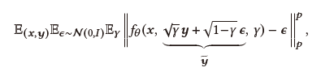
- XX 建议使用 正则化, 即 , 而标准的制定是基于 正则化.
- 我们认为 的样本多样性明显低于 , 我们这里采用 正则化.
-
-
结构(Architecture):
- 基于 U-Net 结构
- 网格架构(network architecture) 类条件 U-Net 模型
两者区别:
- 缺少类条件反射(absence of class-conditioning)
- 通过连接对原图像进行额外的条件反射(additional conditioning of the source image via concatenation)
-
4 EVALUATION PROTOCOL 评估协议
-
- Colorization 之前的工作依赖于 FID 评分 和 人类评价 进行模型比较(model comparison)
- Inpainting 和 UnCropping 往往严重依赖 定性评价(qualitative evaluation)
- 对于其他任务, 如 JPEG restoration, 通常使用基于参考的像素级相似度评分(reference-based pixel-level similarity scores), 如 PSNR 和 SSIM
- 同样注意的是, 许多任务缺乏用于评估的标准化数据集(standardized dataset for evaluation), 例如，不同测试集具有方法特定的分割(method-specific splits)进行评估。
-
- 鉴于 ImageNet 的规模(scale), 多样性(diversity)和公共可用性(public availability), 我们提出了一种统一的评估协议, 用于在 ImageNet 上进行 inpainting, uncropping, JPEG restoration.
- 对于 inpainting 和 uncropping 现有的工作依赖 Places2 进行评估, 因此我们还在 Places2 上为这些任务使用标准的评估设置(standard evaluation setup).
- 具体来说，我们主张使用 ImageNet ctest10k split 作为 ImageNet 上所有 image-to-image translation tasks 的基准测试的标准子集, 还引入了 places10k。
- 除了受控的人工评估外(in addition to controlled human evaluation), 我们进一步提倡使用自动度量(automated metrics)来捕获图像质量和多样性
- 避免使用 PSNR 和 SSIM 这样的像素级指标(倾向于选择模糊回归输出 blurry regression outputs, 不像人类的感知 unlike human perception), 对于需要幻觉?(hallucination)的困难任务, 比如 super-resolution work, 它们不是可靠的样本质量衡量标准.
-
-
对于 image-to-image translation, 我们用四个方式量化:
- Inception Score (IS)
- Fréchet Inception Distance (FID)
- 预训练 ResNet-50 分类器 (pre-trained ResNet-50 classifier) 的 Classification Accuracy (CA)
- Perceptual Distance (PD)的简单测量方法, 即, Inception-v1 特征空间中的欧氏距离
其他参见附录 C.5
对于某些任务, 通过多个模型输出之间的成对的 SSIM 和 LPIPS 评分来评估样本多样性(sample diversity).
-
- 最终评价还是人的评价(human evaluation), 根据愚弄率(fool rate)总结结果, 即当被问及“你猜哪个图像来自相机?”时，人类评分者选择模型输出而不是自然图像的百分比。(附录 C)
5 EXPERIMENTS 实验
我们将 用于: Colorization, Inpainting, Uncropping, JPEG restoration
我们不需要:
- 特定于任务的超参数调优(task-specific hyper-parameter tuning)
- 体系结构定制(architecture customization)
- 任何辅助损失函数(any auxiliary loss function)
所有任务的输入和输出都表示为 RGB 图像, 每项任务都具有独特的挑战:
-
Colorization:
- 对对象进行表示(representation of objects)
- 分割(segmentation)
- 布局(layout)
- 具有长期的图像依赖性(with long-range image dependencies)
-
Inpainting:
- 大图(large masks)
- 图像杂乱的场景(image diversity and cluttered scenes)
-
Uncropping
- 比 Inpainting 更具挑战性, 周围环境很少约束语义意义的生成(less surrounding context to constrain semantically meaningful generation)
-
JPEG restoration
- 一个非线性的逆问题(non-linear inverse problem)
- 需要一个良好的自然统计局部模型(a good local model of natural image statistics)来检测(detect)和纠正压缩伪影(correct compression artifacts)
使用 损失作为去噪目标, 除非单独声明(unless otherwises pecified)(附录 B)
5.1 Colorization
-
之前的工作采用 [LAB](https://baike.baidu.com/item/Lab 色彩空间/6833664) 或 YCbCr 颜色空间来表示输出图像进行 Colorization, 而我们使用 RGB 颜色空间来保持任务间的通用性(maintain generality across tasks), 但是 在 YCbCr 和 RGB 颜色空间中同样有效.
-
我们将 与 PixColor 和 ColTran 进行比较:
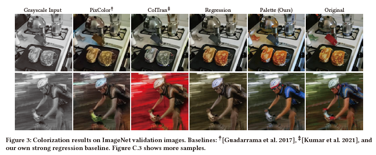
- 量化得分:
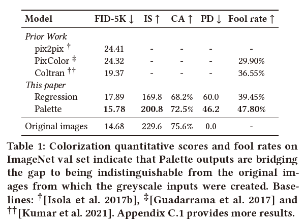
- 建立了一个新的 SoTA, FID, IS 和 CA 表面, 输出与用于创建测试灰度输入的原始图像 (test greyscale inputs) 几乎无法区分.有着接近 50% 的理想欺骗率(ideal fool rate).
5.2 Inpainting
-
我们在自由形式生成的蒙版(free-form generated masks)上训练嵌入 inpainting 模型, 用简单的矩形模板(simple rectangular masks)进行增强.
-
为了在任务间保持 的通用性(generality), 我们没有向模型传递二进制 inpainting mask, 我们用标准的高斯噪声填充 masked region 以 兼容去噪扩散模型(compatible with denoising diffusion models), 训练损耗只考虑被遮蔽的像素, 而不是整个图像, 以加速训练.
-
我们将 与 DeepFillv2 , Photoshop 的感知填充, Co-ModGAN 进行比较, 结果比它们都好(附录 C.2)
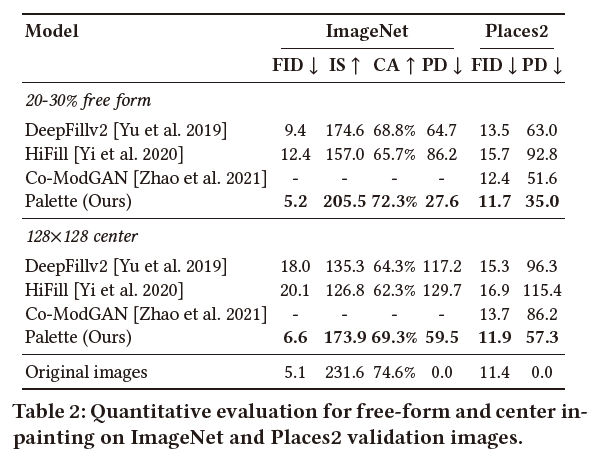
5.3 Uncropping
-
我们训练 在四个方向中的任意一个方向上 Uncropping, 或者在四面的整个图像边界上 Uncropping.
-
在所有情况下, 我们都保留 masked region 为源图像的 50%.
-
像 inpainting 一样, 我们用 Gussian noise 填充 masked region, 并在推理过程(inference)中保持 unmasked region 不变.
-
我们将 与 Boundless 和 InfinityGAN 比较.
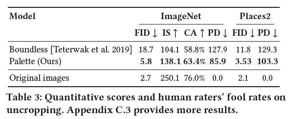
- 具有惊人的鲁棒性:
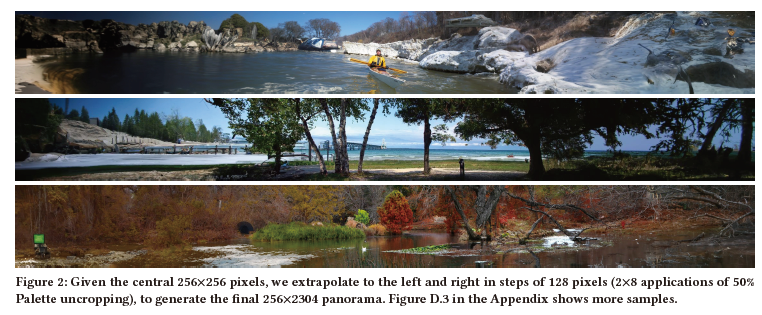
5.4 JPEG restoration
-
尽管之前的工作限制自身的质量因子 10, 但我们这次训练质量因子低至 5
-
在所有质量因素上都表现出很强的性能, 优于 regression baseline.(比其产生更清晰的图像.)
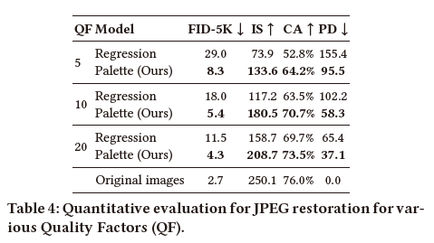
5.5 Self-attention in diffusion model architectures
-
Self-attention layers 一直是用于 diffusion models 的 U-Net 架构的重要组成部分
-
虽然 self-attention layers 提供了一种直接的全局依赖形式(direct form of global dependency), 但它们阻止了对不可见图像分辨率的泛化(prevent generalization to unseen image resolutions)
-
对于 image-to-image tasks, 在测试时泛化到新的分辨率是方便的, 因此之前的工作依赖于完全卷积的体系结构(fully convolutional architectures)
-
我们分析了 self-attention layers 对 inpainting 样本质量的影响, inpainting 是 image-to-image tasks 中比较困难的之一.
-
为了支持 的输入分辨率泛化, 我们探索用不同的备选方案替换 global self-attention layers, 每个备选方案都代表了 大上下文依赖性(large context dependency) 和 分辨率的健壮性(resolution robustness) 的均衡:
- Global Self-Attention: 在 , 和 分辨率上使用 Global Self-Attention 的基线配置(Baseline configuration).
- Local Self-Attention: 在 , 和 分辨率上, 将特征图划分为 4 个不重叠的查询块.
- More ResNet Blocks w/o Self-Attention: residual blocks 在 , 和 分辨率上允许更深的卷积(deeper convolutions) 增加接受域大小(increase receptive field sizes).
- 没有自我注意的膨胀卷积(Dilated Convolutions w/o Self-Attention): 类似于 More ResNet Blocks w/o Self-Attention, ResNet 在 , 和 分辨率上阻塞, 扩张率不断增加, 允许接受视野呈指数增长.
-
训练效率:
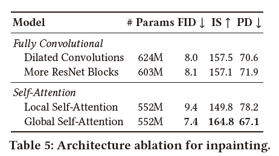
5.6 Sample diversity 样本的多样性
- 分析 在 colorization 和 inpainting 两个任务中的 sample diversity, 具体地, 我们分析了扩散损失函数(diffusion loss function) , 比较 和 对样本多样性的影响.
- 现有的 conditional diffusion models, SR3, wavegard 发现 正则化比 loss 表现更好.
- 为了定量比较样本多样性, 我们使用 multi-scale 和 LPIPS 多样性评分
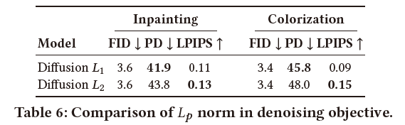
5.7 Multi-task learning 多任务学习
-
多任务训练是学习单一模型(learning a single model)进行多个 image-to-image 任务, 即盲图像增强
-
另一种是将无条件模型(unconditional model) 应用于具有归责性(imputation)的条件任务(conditional tasks)
-
例如 inpainting:
在迭代细化的每一步中, 他们去噪来自上一步的噪声图像, 然后简单地用观察到的图像区域的像素替换估计图像(estimated image) , 然后添加噪声并进行下一个去噪迭代(next denoising iteration).
-
-
下图将此方法针对所有四个任务训练的多任务 模型 和仅针对 inpainting 训练的 模型进行比较, 所有模型都使用相同的体系结构(architecture), 训练数据(training data)和训练步骤的数量(number of training steps)
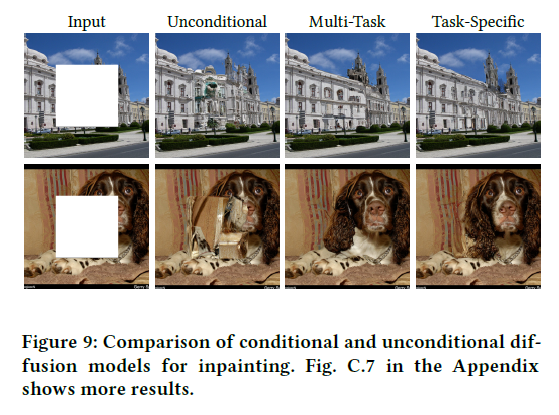
- 为了更深入地探索多任务模型的潜力, 下表提供了同时训练 JPEG restoration, inpainting 和 colorization, 这表明 multi-task generalist 优于 task-specific models, 但是 inpainting 和 colorization 略微(slightly)落后于 task-specific models.
- 我们希望通过更多的 training 来提高多任务处理能力(multi-task performance)
6 CONCLUSION
在四个具有挑战性的问题上取得了很好的结果.